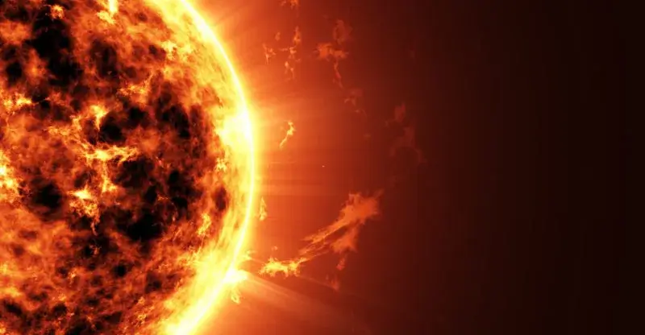
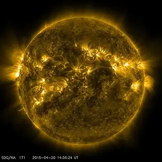
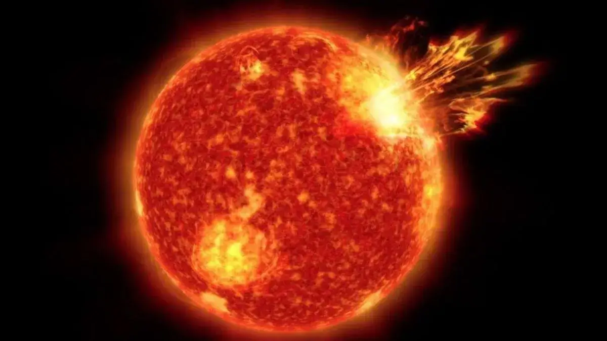
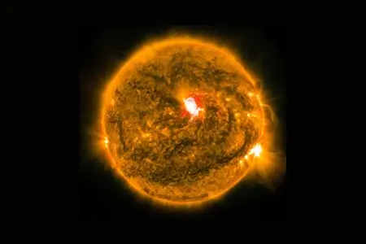
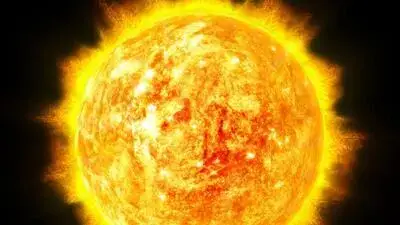

Sol

Características Físicas
El Sol es una estrella de tipo espectral G2V, una esfera compuesta principalmente de hidrógeno y helio que genera energía a través de la fusión nuclear en su núcleo.

Distancia al Sol
El Sol está a una distancia media de aproximadamente 149.6 millones de kilómetros de la Tierra.

Órbita
El Sol orbita el centro de la Vía Láctea a una distancia de aproximadamente 26,000 años luz y tarda unos 225-250 millones de años en completar una órbita.

Observación Solar
La observación del Sol ha sido crucial para el desarrollo de la astronomía y la comprensión de la física estelar. Utilizamos telescopios solares especializados para evitar daños oculares.

Etimología
La palabra "sol" proviene del latín "sol", que significa "el que brilla" o "el que ilumina".